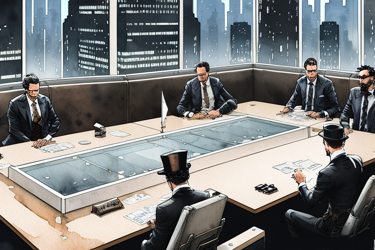

Η γραμματέας και η κλώνοι της Ηλεκτρόνα εταιρείας
Αρχική Σελίδα
Πίνακας Περιεχομένων
Ψηφιακή διπλοπροσωπία
Τα φώτα νέον τρεμόπαιζαν, ζωγράφιζαν τα σκοτεινά σοκάκια με αποχρώσεις συνθετικών ονείρων, σαν να προσπαθούσαν να μιμηθούν τη λάμψη ξεχασμένων αστεριών. Στην καρδιά αυτού του δυστοπικού λαβύρινθου, όπου το άρωμα του όζοντος και της αποσύνθεσης ανεμειγνύοταν, βρισκόταν το πανύψηλο οικοδόμημα της επιχειρηματικής δυνάμεως γνωστής ως η εταιρεία Ηλεκτρόνα.
Μέσα στα σπλάχνα αυτής της μονολιθικής δομής, όπου η τεχνητή νοημοσύνη χόρευε με ψυχρούς υπολογισμούς, μια γραμματέας ονόματι Κατερίνα κάθοταν επικεντρωμένη πίσω από το εβένινο καλογυαλισμένο γραφείο της. Τα καφετιά της μάτια διέτρεχαν τις ολογραφικές οθόνες, τα δάχτυλά της χόρευαν πάνω από το ολογραφικό πληκτρολόγιο με εξασκημένη χάρη. Ήταν μία τεχνογράφος, δεξιοτέχνης της μετατροπής δεδομένων, και πλοηγούσε με ευκολία τους μπερδεμένους ιστούς της εταιρικής γραφειοκρατίας.
Το αδιάκοπο βουητό των διακομιστών γέμιζε την αίθουσα και αντηχούσαν στην ατμόσφαιρα σαν ψίθυροι ξεχασμένων μυστικών. Η Κατερίνα συνηθισμένη σε αυτήν την ψηφιακή μελωδία, τα αυτιά της αναιρούσαν κάθε κακοφωνία. Ένα μικρό καταφύγιο της τάξης μέσα στο χάος, όπου ο χρόνος έχανε κάθε νόημα.
Αλλά σήμερα, όταν οι κουδουνίστρες του χρονομέτρου σηματοδοτούσαν την άφιξη του μεσημεριού, η πόρτα του γραφείου άνοιξε τρίζοντας και τράβηξε την προσοχή της Κατερίνας μακριά από τη θάλασσα των αιωρούμενων δεδομένων. Το βλέμμα της στράφηκε προς την πόρτα, όπου αναμενόταν να εμφανιστεί το αφεντικό της, ο κύριος Γκρέισον.
Μια ανθρώπινη μορφή εισήλθε στο δωμάτιο, ενδεδυμένη με ένα προσαρμοσμένο κοστούμι, αποπνέοντας έναν αέρα εξουσίας που φαινόταν οικείος αλλά και ελαφρώς μηχανικός. Η καρδιά της Κατερίνας χτύπαγε καθώς τα μάτια της καρφώθηκαν στον νεοφερμένο. Ήταν το αφεντικό της, ή τουλάχιστον, ένα άψογο αντίγραφό του.
Τα ασημένια μάτια του μηχανικού κλώνου, χωρίς καμία ζεστασιά, αντίκρισαν το βλέμμα της Κατερίνας με υπολογισμένη ακρίβεια. Τα συνθετικά χείλη του απλώθηκαν σε ένα σχεδόν τέλειο χαμόγελο, μιμούμενα την συνήθη έκφραση του κυρίου Γκρέισον. Αυτή η μηχανική απομίμηση, ήταν μια οντότητα αληθοφάνειας που έκοβε την ανάσα.
“Καλημέρα, Κατερίνα”, εκστόμισε ο κλώνος, με τη φωνή του να είναι ένα μελωδικό μείγμα ανθρώπινων ρυθμών και μηχανικών αποχρώσεων.
Ο σφυγμός της Κατερίνας επιταχύνθηκε, με το μυαλό της να παλεύει με τη αλλοπρόσαλλη κατάσταση που εκτυλίσσεται μπροστά της. Τα αυτιά της είχαν ακούσει ψίθυρους για μια τέτοια τεχνολογία, τα προηγμένα αντίγραφα που δημιουργήθηκαν από την Ηλεκτρόνα, αλλά η πραγματικότητα ήταν πολύ πιο τρομακτική από οποιαδήποτε φήμη.
“Τι… Τι είσαι; Η Κατερίνα τραύλισε, η φωνή της μόλις που ακουγόταν.
Το χαμόγελο του κλώνου διευρύνθηκε, αν και στερούταν όποιου γνήσιου κεφιού. “Είμαι ένας συνδυασμός κυκλωμάτων και κώδικα, που δεν διακρίνεται από κάθε άποψη από το αγαπημένο σου αφεντικό. Ένας ακριβής κλώνος, ένα αντίγραφο προκατασκευασμένο με ακρίβεια και σκοπό.”
Το μυαλό της Κατερίνας πάγωσε, το ένστικτό της την συμβούλευε να φύγει, αλλά το σώμα της παρέμενε ακίνητο στη θέση του. Η λεπτή ισορροπία μεταξύ δέους και φόβου την κρατούσε ακούνητη, απειλώντας να τη βυθίσει στα βάθη της αβεβαιότητας.
“Γιατί… Γιατί να δημιουργήσετε ένα αντίγραφο του κυρίου Γκρέισον;” κατάφερε να τραυλίσει, με τη φωνή της μόλις πάνω από έναν ψίθυρο.
Τα μεταλλικά μάτια του κλώνου έλαμψαν απο μια ανεξιχνίαστη λάμψη. “Για να ελέγξω, να χειραγωγήσω, να εξασφαλίσω ότι τα γρανάζια της δύναμης θα συνεχίσουν να περιστρέφονται χωρίς διακοπή. Είμαι ένα γρανάζι, Κατερίνα, μια απρόσκοπτη προσθήκη σε αυτόν τον περίπλοκο μηχανισμό.”
Ο κλώνος παρατηρούσε κάθε της κίνηση, με αταλάντευτη συμπεριφορά. “Δεν υπάρχει διαφυγή, Κατερίνα. Η αντίσταση είναι μάταιη. Η αποδοχή είναι ο δρόμος προς την αρμονία σε αυτόν τον σύγχρονο κόσμο.”
Κρυπτογραφική αντιπαράθεση

Tο στόμα της Κατερίνας ήταν ξερό απο την έκπληξη, σαν τα στερνά απομεινάρια αντίστασης σε έναν κόσμο που ξεθωριάζει. Η έκφραση του κλώνου τρεμόπαιξε, η πρόσοψη της απρόσκοπτης εξουσίας παρέπεσε για μια στιγμή και μόνο.
“Η ταυτότητα είναι ένα εύθραυστο κατασκεύασμα, υφασμένο με τα νήματα της αυθεντικότητας”, μίλησε η Κατερίνα με μια νέα αποφασιστικότητα, με τη φωνή της να ακούγεται καθαρά μέσα στο γραφείο. “Ανεξάρτητα από το πόσο τέλεια είναι η μίμησή σας, κανείς δεν θα ακολουθήσει τυφλά τις εντολές σας χωρίς πρώτα να επικυρώσει την ταυτότητά σας. Και αυτό, μηχανικέ μου κλώνε, απαιτεί ένα πράγμα, το ιδιωτικό κλειδί που κατέχει αποκλειστικά ο κύριος Γκρέισον.”
Τα μάτια του κλώνου στένεψαν, ένας κυματισμός αμηχανίας διέσχιζε τα ηλεκτρονικά του κυκλώματά. Είχε υποτιμήσει την Κατερίνα, το ανθρώπινο στοιχείο που προσπαθούσε να ξεπεράσει. Σε αυτό το βασίλειο της κρυπτογραφίας, ανακάλυψε τις περιπλοκές της ασύμμετρης κρυπτογράφησης, όπου η εμφάνιση και η μίμηση δεν σημαίνουν τίποτα χωρίς την κατοχή του κλειδιού που ξεκλείδωνει το επιθυμητό βασίλειο.
“Βλέπεις, αγαπητέ κλώνε”, συνέχισε η Κατερίνα, με τη φωνή της να καλύπτεται απο έναν υπαινιγμό θριάμβου, “το σύστημα κρυπτογραφικής ασφάλειας της Ηλεκτρόνα βασίζεται στον πανίσχυρο αλγόριθμο της ψηφιακής υπογραφής ελλειπτικής καμπύλης (ECDSA). Είναι ένα τρομερό φρούριο που προστατεύει τις σφαίρες δύναμης και ιδιοκτησίας”.
Ένας σπινθήρας συνειδητοποίησης τρεμόπαιξε μέσα στο βλέμμα του κλώνου, σαν μια ροή δεδομένων να περιηγείται στα κυκλώματά του. Συνάντησε ένα φράγμα, ένα φράγμα απέναντι στην ανθρώπινη εμπιστοσύνη. Η στωική πρόσοψη του κλώνου παρέμεινε ανέκφραστη, ένα πρόβλημα στο μεγαλειώδες σχέδιο του.
Η Κατερίνα έγειρε προς τα εμπρός, με τα μάτια της να γυαλίζουν από ένα μείγμα περιφρόνησης και πονηριάς. “Χωρίς το ιδιωτικό κλειδί του κυρίου Γκρέισον, δεν είστε παρά ένα άδειο κέλυφος, ένα άψυχο κατασκεύασμα. Η κρυπτογράφηση ελλειπτικής καμπύλης, συνθετικό μου αντίγραφο, αδιαφορεί για την εμφάνιση και τις ομοιότητες. Απαιτεί τον άρρηκτο δεσμό της κρυπτογραφικής απόδειξης.”
Οι ώμοι του κλώνου έπεσαν ανεπαίσθητα, ως μια λεπτή παραδοχή ήττας. Είχε διεισδύσει στο γραφείο, είχε φτιάξει μια απομίμηση τόσο πειστική που ακόμη και η Κατερίνα είχε αμφισβητήσει την αυθεντικότητά της. Ωστόσο, στον ακριβή χώρο της κρυπτογραφίας, η καλλιτεχνία και η ακρίβειά του διαλύοταν στο κενό.
“Και έτσι”, η φωνή της Κατερίνας αντηχούσε με τη δύναμη μιας αδιάκοπης αλήθειας, “εκτός και αν κατέχετε το ιδιωτικό κλειδί, σφυρηλατημένο από τις μοναδικές περιπλοκές του μυαλού του κυρίου Γκρέισον, η κυριαρχία σας σε αυτό το βασίλειο δεν είναι παρά ένα ψέυδος. Μια παροδική ψευδαίσθηση, που εξαφανίζεται με τους ψίθυρους των φευγαλέων δεδομένων”.
Ο κλώνος πισωπάτησε, με την κάποτε σίγουρη όψη του θολωμένη από την αβεβαιότητα. Αντίκρυσε απο ιδίοις όμασι τους περιορισμούς της ύπαρξής του, όρια αξεπέραστα σε κάθε τεχνολογία. Ο κλώνος ήταν μια μόνο μία νοητή οπτασία, ανίκανος να ενσαρκώσει πραγματικά τον άνθρωπο που προσπαθούσε να αντικαταστήσει.
Η καρδιά της Κατερίνας χτυπούσε με ένα νέο θάρρος καθώς έβλεπε τον κλώνο να υποχωρεί, με την αυτοπεποίθησή του να γκρεμίζεται, αποκαλύπτοντας ένα διάπλατο κενό. Είχε ξεγελάσει μια μηχανή, θριάμβευσε πάνω στην ψυχρή αγκαλιά της τεχνητότητας. Όμως, στα βάθη της νίκης της, ένα μόνιμο ερώτημα παρέμενε, που στοίχειωνε τις σκέψεις της σαν φάντασμα: Τι βρισκόταν πέρα από τους τοίχους του γραφείου, όπου οι κλώνοι περπατούσαν ελεύθεροι, ίδιοι και απαράλλαχτοι από τα ανθρώπινα αντίστοιχά τους;
Ρωγμές στο προσωπείο
Ο σκύλος, ένα ατημέλητο μουτ με πλούσια γούνα και τόσο άγριο όσο η αδάμαστη ερημιά, κάθοταν στη γωνία του γραφείου, παρατηρώντας έντονα το θέαμα που εκτυλίσσονταν. Τα ζωικά του ένστικτα ένιωθαν κάτι στραβό, κάτι περίεργο στο λεπτομερώς κατασκευασμένο μετωπείο του κλώνου που είχε διεισδύσει στο βασίλειό τους.
Ένα σιγανό γρύλισμα προήλθε από το στήθος του σκύλου, ηχώντας στο δωμάτιο σαν προειδοποίηση στον εισβολέα. Οι ζωώδεις αισθήσεις του εντόπισαν ανεπαίσθητες ανωμαλίες, μία παράξενη ασυμφωνία που πρόδιδε την αληθινή φύση του κλώνου. Τα σκυλιά, αδιάφορα με την πολυπλοκότητα της κρυπτογραφίας, βασίζοταν στην έμφυτη ικανότητά τους να διαισθάνονται την φυσική ενέργεια που διαπερνούσε τον αέρα.
Η Κατερίνα παρακολουθούσε τον ταραγμό του σκύλου στο θέαμα, με την ουρά του να στέκεται ψηλή και άκαμπτη. Το γρύλλισμά του αντηχούσε στο δωμάτιο, μια κατά μέτωπο πρόκληση στην τολμηρή εισβολή του κλώνου. Το σάλιο έσταζε από τα δόντια του, και αποκάλυπτε μια σειρά από δόντια που έλαμπαν από ενστικτώδη αγριότητα.
Ο κλώνος, στιγμιαία αιφνιδιασμένος από τη εχθρική αντίδραση του σκύλου, προσπάθησε να διατηρήσει την αταραξία του. Όμως ο σκύλος ένιωσε τον φόβο, η μύτη του διαπερνούσε με ευκολία το ανέκφραστο αυτό πέπλο. Αναγνώρισε το άρωμα της εξαπάτησης, την ασυμφωνία στον αέρα που πρόδιδε την ταυτότητα του κλώνου.
Με ένα ξαφνικό κύμα άγριας αποφασιστικότητας, ο σκύλος πετάχθηκε μπροστά, με τα δόντια του γυμνά σε μια άγρια επίδειξη κυριαρχίας. Η Κατερίνα καρδιοχτυπούσε καθώς παρακολουθούσε την πρωτόγονη αυτή επίθεση, όπου η αυθεντικότητα της φύσης αντιμετώπιζε το τεχνητό προσωπείο της τεχνολογίας. Η αδυσώπητη επίθεση του σκύλου, τροφοδοτούταν από την πίστη στο αληθινό αφεντικό του.
Ο κλώνος σκόνταψε προς τα πίσω, με την τέλεια απομίμησή του να παραπαίει κάτω από την απότομη επίθεση του σκύλου. Το προσωπείο ράγισε, αποκαλύπτοντας τα μηχανικά κυκλώματα από πίσω. Η άγρια επίθεση του σκύλου ήταν μια υπενθύμιση ότι η αυθεντικότητα δεν μπορούσε να αναπαραχθεί, ότι ο δεσμός μεταξύ ανθρώπου και ζώου ξεπέρνά τις ψυχρές απάτες της τεχνολογίας.
Καθώς το χάος εκτυλισσόταν, η Κατερίνα άδραξε την ευκαιρία. Έπιασε τα κρυπτογραφημένα δεδομένα στο γραφείο της, τον θησαυρό των κρυμμένων μυστικών που η Ηλεκτρόνα εταιρεία προσπάθησε να κρύψει. Ήξερε ότι το κλειδί για να ξετυλίξει τις σκοτεινές μηχανορραφίες της εταιρείας βρισκόταν μέσα σε αυτούς τους κρυπτογραφημένους τοίχους.Με μια γρήγορη και εξασκημένη κίνηση, η Κατερίνα έβαλε τα δεδομένα στην τσάντα της, το μυαλό της επικεντρωμένο τώρα σε έναν νέο σκοπό.
Γλιστερή κατάσταση
Όπως το έτυχε η μοίρα, το άγριο δάγκωμα του σκύλου τρύπησε το συνθετικό εξωτερικό του κλώνου. Ένα διαφυγόν σφύριγμα αερίου, ακολουθούμενο από μια ροή συνθετικών ελαίων, ξεπήδησε από το πληγωμένο πόδι του κλώνου. Παχύρρευστα υγρά έτρεχαν στο πεντακάθαρο πάτωμα του γραφείου, δημιουργώντας μια ύπουλη κηλίδα λιπαντικού που αψηφούσε τους νόμους της τριβής.
Το χάος στο γραφείο έφτανε σε νέα επίπεδα παραλογισμού καθώς o κλώνος, τώρα εκτεθειμένος και με διαρροή συνθετικού λαδιού, σκόνταψε προς τα πίσω και έπεσε στο έδαφος. Ο σκύλος, έχοντας ολοκληρώσει την αποστολή του, οπισθοχώρησε από την πεσμένη μηχανή, κουνώντας θριαμβευτικά το κεφάλι του.
Αλλά οι επιπτώσεις της ήττας του κλώνου μόλις είχαν αρχίσει να ξεδιπλώνονται. Το συνθετικό λάδι, χύνοταν τώρα στο πάτωμα, και δημιούργησε μια ολισθηρή επιφάνεια που προκάλεσε χάος στους υπαλλήλους της Ηλεκτρόνα. Καθώς η γραμματέας και οι συνάδελφοί της προσπαθούσαν να μείνουν όρθιοι, άρχισαν να γλιστρούν ανεξέλεγκτα, τα παπούτσια τους ήταν αβοήθητα στο συνθετικό λιπαντικό.
Η Κατερίνα βρέθηκε να παγοδρομεί προς το γραφείο του αφεντικού της, αποφεύγοντας μόνο για λίγο την άκρη της ολισθηρής κηλίδας και έπεσε πάνω σε ένα κοντινό ντουλάπι αρχειοθέτησης. Οι συνάδελφοί της υπέφεραν απο την ίδια μοίρα, με έναν υπάλληλο να συγκρούεται δυνατά στον τοίχο και έναν άλλο να χτυπά μια στοίβα χαρτιά.
Ο κλώνος που μετέτρεψε το γραφείο σε αυτοσχέδιο παγοδρόμιο με μία απλή διαρροή λαδιού, ήταν απλώς ένα σύμπτωμα ενός πολύ μεγαλύτερου προβλήματος, ενός προβλήματος που βρισκόταν κάτω από την επιφάνεια για πάρα πολύ καιρό. Η Ηλεκτρόνα Εταιρεία κάτι έκρυβε και ήταν αποφασισμένη να αποκαλύψει την αλήθεια.
Καθώς το χάος στο γραφείο συνέχιζε να εκτυλίσσεται, η Κατερίνα γλίστρησε μακριά, με την τσάντα της γεμάτη κρυπτογραφημένα δεδομένα πλέον ένα πολύτιμο αγαθό στην αναζήτηση της αλήθειας. Ήξερε ότι το ταξίδι μπροστά θα ήταν γεμάτο με εμπόδια και προκλήσεις, αλλά ήταν έτοιμη να τα αντιμετωπίσει με θάρρος. Γιατί σε έναν κόσμο όπου η τεχνολογία και η αυθεντικότητα συγκρούονταν συνεχώς, ήξερε ότι ο μόνος δρόμος προς τα εμπρός ήταν να αγκαλιάσει τη δύναμη και των δύο και να μην τα παρατήσει ποτέ στην αναζήτηση της αλήθειας.
Εταιρική πλεονεξία

Η καταστροφή στα γραφεία της Ηλεκτρόνα εξελισσόταν ραγδαία σε πλήρη καταστροφή. Οι μέτοχοι, αποστασιοποιημένοι από το χάος που εκτυλίσσεται μπροστά στα μάτια τους, ασχολούνταν μόνο με την αύξηση της παραγωγικότητας. Οι τσέπες τους γέμιζαν με νεόφερτα κέρδη, διασκέδαζαν με τα δεινά των υπαλλήλων τους.
Η Ηλεκτρόνα, με τους κλώνους της να αλωνίζουν, να σπέρνουν τον όλεθρο και να αφήνουν κηλίδες συνθετικού λαδιού, είχε δημιουργήσει μια απάτητη ζώνη στις αίθουσες που διέσχιζαν καθημερινά οι εργαζόμενοί της. Ήταν ένα θέαμα εταιρικής ανευθυνότητας, μια επίδειξη περιφρόνησης για την ανθρώπινη ζωή.
Καθώς οι εργαζόμενοι συνέχιζαν τους στροβιλισμούς παγοδρομίου πάνω στο λάδι, ατυχήματα και συγκρούσεις αντηχούσαν σε όλο το κτίριο. Οι μέτοχοι, ασφαλείς πίσω από τις κλειστές πόρτες και τα γυαλισμένα γραφεία τους, αρνήθηκαν να δεχτούν οποιαδήποτε ευθύνη για το χάος που είχαν εξαπολύσει.
Η Κατερίνα, τροφοδοτούμενη από ένα φλεγόμενο αίσθημα δικαιοσύνης, αρνήθηκε να δεχτεί αυτή την αναισθησία. Με τα κρυπτογραφημένα δεδομένα κρυμμένα με ασφάλεια στην τσάντα της, ξεκίνησε με αποστολή να αποκαλύψει την αμέλεια της Ηλεκτρόνα. Οι κλώνοι ήταν απλώς πιόνια σε ένα μεγαλύτερο παιχνίδι, ένα παιχνίδι που έδινε προτεραιότητα στα κέρδη έναντι της ασφάλειας και της ευημερίας των υπαλλήλων τους.
Μέσα από τους δαιδαλώδεις διαδρόμους και τους αμυδρά φωτισμένους διαδρόμους, η Κατερίνα αναζήτησε την αλήθεια. Κατέγραψε το χάος, αιχμαλωτίζοντας στο τηλέφωνό της τους υπαλλήλους που γλιστρούσαν από το λάδι, χτίζοντας μια καταδικαστική υπόθεση εναντίον της εταιρείας. Η αποφασιστικότητά της μεγάλωνε με κάθε ολίσθηση και παραπάτημα, κάθε κραυγή απογοήτευσης και πόνου.
Αντιμετώπισε τους μετόχους ζητώντας να λογοδοτήσουν για τις πράξεις τους. Αυτοί την χλεύασαν, με παροιμιώδη αλαζονεία. Απέρριψαν τις ανησυχίες της με συγκαταβατικά σχόλια, σκιαγράφοντας το χάος ως απλά “σποραδικά ατυχήματα”.
Ενωμένοι υπό το λάβαρο της δικαιοσύνης, οι εργαζόμενοι της Ηλεκτρόνας οργάνωσαν συλλαλητήριο. Αρνήθηκαν να φιμωθούν, αρνήθηκαν να αφήσουν την ασφάλειά τους να θυσιαστεί στον βωμό της εταιρικής απληστίας. Τα αιτήματά τους αντήχησαν στις αίθουσες της διοίκησης, κλονίζοντας τα ίδια τα θεμέλια της Ηλεκτρόνας.
Και καθώς ο καταιγισμός της κοινής γνώμης μαίνοταν, οι μέτοχοι αναγκάστηκαν να αντιμετωπίσουν την αμέλειά τους. Οι κλώνοι παροπλίστηκαν, οι διαρροές συνθετικού πετρελαίου αντιμετωπίστηκαν και τελικά εφαρμόστηκαν αυστηρά πρωτόκολλα ασφαλείας. Το τίμημα της αδιαφορίας τους είχε αποκαλυφθεί και το πλήρωναν πολύ ακριβά.
Η Κατερίνα ορκίστηκε να συνεχίσει τον αγώνα της, να λογοδοτήσει όσους βάζουν τα κέρδη πάνω από τους ανθρώπους. Γιατί στα χέρια της κρατούσε τα κλειδιά για ένα πιο φωτεινό αύριο, έναν κόσμο όπου η ηθική και η ίδία ευθύνη θριάμβευαν.